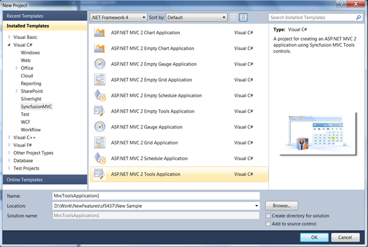
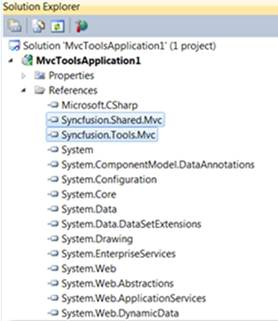
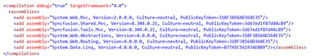
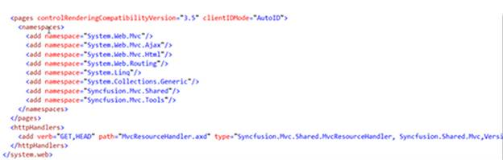

Once the project templates are installed, all the product templates are displayed on selecting Syncfusion MVC from the left tree of VS2010 New Project window. To use the project templates, select the appropriate template and start using the controls.
To show how effortless it is to get started with these templates when using Syncfusion MVC controls, let us create a simple application using the Syncfusion RichTextEditor control (RTE). In order to use the RTE control:
1. Select VS2010 --> New Project –> Visual C# –> Syncfusion MVC.
2. Select MVCToolsApplication project template.
3. Name the application.
4. Click OK.

Figure 11: MVCToolsApplication Selected
This will create a new MVC application with all the predefined settings (which we call the steps for the Configuration phase).
As in the References section, the Tools and Shared dll references are already added.

Figure 12: Appropriate dlls Referred
The Web.Config file will contain the assembly references , the namespaces and all the handlers. Also, the scripts, StyleManager and the ScriptManager will be added in the Site.Master .
 Note: For versions previous to 8.4,
RegisterStaticResources() will be added in the Site.Master.
Note: For versions previous to 8.4,
RegisterStaticResources() will be added in the Site.Master.

Figure 13 : Assembly References Added

Figure 14: Handlers Added
Now all that you need to do is create an object of the RTE control in View.
Figure 15 : Creating an Instance of RTE Control
Run the solution and the RTE control will be displayed on the screen.
Figure 16 : RichTextEditor Added to the Application
{kind=link}
{kind=link}